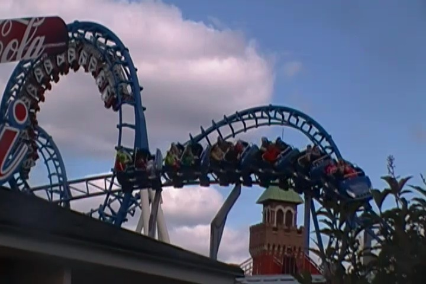
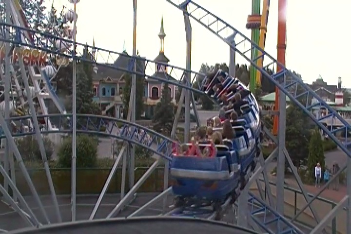

| |
Joyride Review

We're here at Power Park to review their family coaster. Joyride. An L&T compact coaster that honestly, it's a carnival coaster. It's just a carnival coaster that they plopped onto the asphalt. But hey. It's a fun little ride. So let's hop in the cars, pull down the lapbar, and away we go! We roll around a turn, and begin climbing the lifthill. Take a good look at the rollercoaster around you. Eventually, you reach the top. We go around a turn, and then head down a curved drop. It's not super big, but it's fun and gives us some decent speed. Wee!!! We then head up a hill. A curved hill. No, there aren't any laterals here. But hey. It's still fun. We head down a small dip, heading straight into a banked turn, and back down a small little drop. Having fun. =) We then head up a small hill, and head around a banked turn before dipping back down. Hey, I'm starting to sense a pattern over here. And hey, we're getting more speed. We head around another turn, and actually get some laterals here. This ride is getting more and more fun. And just as I said that, we glide right into the brake run. So that was Joyride. A fun little compact coaster from L&T. Yeah, it may not be anything spectacular, but it's worth a ride. It is after all, a credit.
5/10
Location: Power Park
Opened: 2003
Built by: L&T
Last Ridden: June 26, 2014
Joyride Photos


Home
|